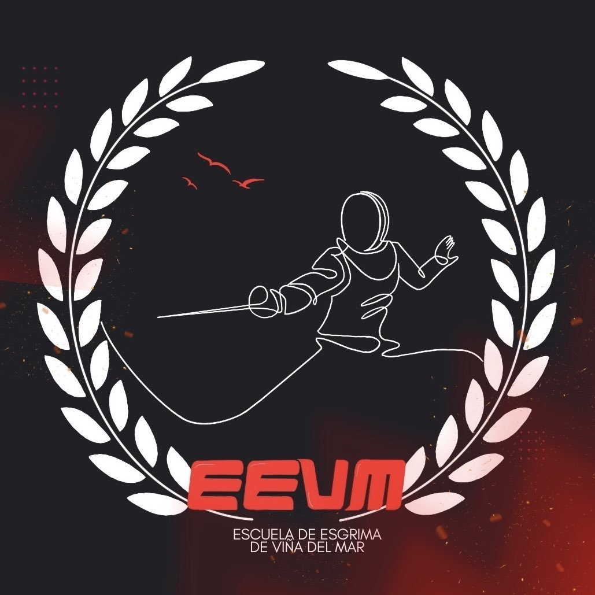

Bienvenidos a nuestro Club de Esgrima Viña del Mar, un espacio donde la
disciplina y la pasión por el combate se unen para formar grandes atletas
y mejores personas.
Aquí fomentamos el respeto, la técnica y el espíritu deportivo en cada
entrenamiento, ofreciendo un ambiente inclusivo tanto para principiantes
como para competidores avanzados.
Te invitamos a descubrir la emoción de la esgrima y a formar parte de una
comunidad comprometida con la excelencia y el compañerismo.

Esgrima Viña (EEVM) es una escuela de esgrima en Viña del Mar que trabaja
con niñas, niños, jóvenes y adultos en la modalidad de espada olímpica.
Los grupos se organizan en categorías infantil, juvenil y adulto,
con programas formativos para quienes dan sus primeros pasos y
entrenamientos competitivos federados para quienes quieren representar a
la ciudad en torneos regionales y nacionales.
Además, estamos afiliados a la Federación Chilena de Esgrima, por lo que
puedes entrenar en un entorno serio y estructurado, pero con ambiente
cercano y familiar. Por lo mismo, ofrecen clases de esgrima en Viña del
Mar con foco técnico, físico y táctico, tanto para quienes solo buscan
aprender como para quienes quieren competir.
La primera clase de prueba es gratis, de modo que puedas conocer el equipo y la disciplina sin compromiso.
¿Buscas clases de esgrima en Viña del Mar con opción de proyectarte a campeonatos oficiales?
¡Llegaste al lugar indicado!
Como club federado, Esgrima Viña (EEVM) participa regularmente en torneos oficiales de la Federación Chilena de Esgrima, tanto a nivel regional como nacional. Asimismo, sus deportistas han logrado podios individuales y por equipos, lo que entrega un entorno competitivo y motivador para quienes quieren ir más allá del entrenamiento recreativo.
Si te interesa competir, el cuerpo técnico te orienta sobre licencias federadas, calendarios y categorías, para que puedas ir trazando objetivos claros temporada a temporada. De este modo, puedes comenzar en la base formativa y avanzar progresivamente hacia un rendimiento infantil, juvenil o adulto federado.
probando pull to my local machine